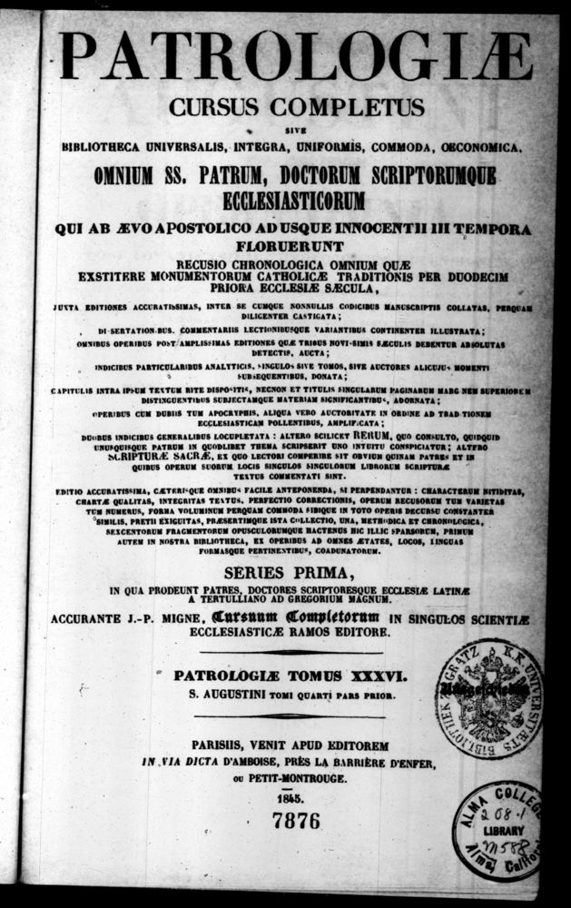

“Si feneraveris homini” (on Ps. 36:26)
Latin: scan. Augustine has just argued that God commands lending to him: “Fenera Deo”. Highlighted: Lecky’s words.

… And it is said to you, Lend to God. If you lend to a man, you have hope; and if you lend to God, will you have no hope? If you have lent to a man, that is, have given him your money, from whom you expect to receive something more than you gave: not the money only, but something more than you gave, whether it be wheat, or wine, or oil, or anything else; if you expect to receive more than you gave, you are a usurer, and in this to be blamed, not praised.
Original Latin
… Et dicitur tibi, Fenera Deo. Si feneras homini, habes spem; et si feneras Deo, spem non habebis? Si feneraveris homini, id est, mutuam pecuniam tuam dederis, a quo aliquid plus quam dedisti exspectes accipere: non pecuniam solam, sed aliquid plus quam dedisti, sive illud triticum sit, sive vinum, sive oleum, sive quodlibet aliud; si plus quam dedisti exspectas accipere, fenerator es, et in hoc improbandus, non laudandus.
| Lecky, 1865 | Migne | |
|---|---|---|
| Verb | Si foeneraveris homini | Si feneraveris homini |
| Loan | id est mutuam pecuniam dederis | id est, mutuam pecuniam tuam dederis |
| Mood | a quo aliquid plus quam dedisti expectas accipere | a quo aliquid plus quam dedisti exspectes accipere |
| Ending | … foenerator es et in hoc improbandus non laudandus | … fenerator es, et in hoc improbandus, non laudandus |
The spelling (foen- for fen-) reflects the older editions that used the diphthong. “Expectas” for “exspectes” and the missing “tuam” may be the edition Lecky used (probably an older Benedictine text); I have not seen it. The meaning is the same. Lecky’s English “description given by St. Augustine of the sin” is a fair label.
Editor’s notes on this page
Lecky gives Augustine’s description of usury as the taking of “something more than you gave”: wheat, wine, oil or anything else. The Latin matches Migne with four small differences: “mutuam pecuniam dederis” for Migne’s “mutuam pecuniam tuam dederis”, “expectas” for “exspectes”, “sive vinum”, and the first words (“Si foeneraveris” for Migne’s “Si feneraveris”). The first two change the grammar, since “a quo … exspectes” is a subjunctive in a relative clause.
Further down the rabbit hole
Sources that Lecky cites in the notes next to the ones that cite this page.
- Concina, Adversus usuram and De spectaculisA Dominican against interest and against the stage: the pope’s own polemicist
- Lamet and Fromageau, Dictionnaire des cas de conscienceThe Sorbonne answers: three per cent is usury, and every actor is in mortal sin
- Troplong, Du prêt: the history of lending at interest“The people cannot live without loans”: a French judge’s history of usury, Lecky’s source for Nicaea and St Louis
- Turgot, Mémoire sur les prêts d’argentLecky’s Turgot quotation with two small differences
- Bayle, Dictionnaire historique et critiqueWhat Bayle really said about Augustine and Socinus
- Benedict XIV, Vix pervenitAny gain beyond the loan is unlawful usury


Backlinks
Every place in Rationalism in Europe that links to this page (generated automatically when the site is built).
- Chapter VI: note 27